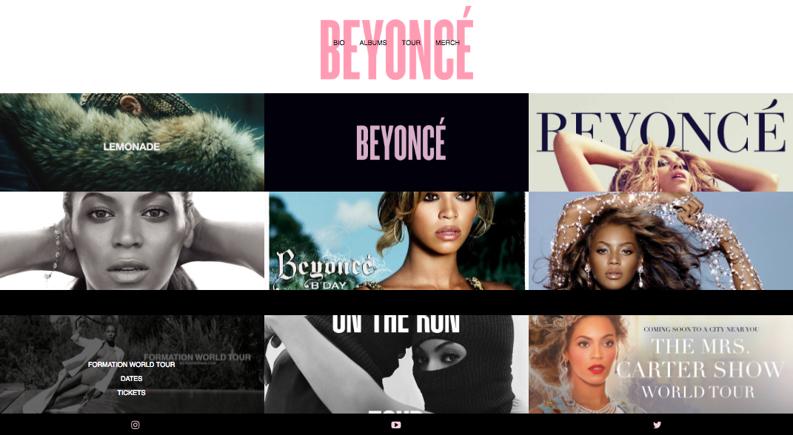

Click to view website
Project: Design a Responsive Webpage
Design a responsive webpage to have three different breakpoints: desktop, tablet, and mobile. Clearly demonstrate the unique layouts for each device.
HTML5/CSS3
Beyonce
This is a prototype website for Beyonce featuring her ablums and world tours. The design changes as the browser gets smaller to maximize functionality for devices of different sizes.
Mockups
I developed mockups for how the website will look when viewed on each of the devices. The design will start at three columns at the desktop size then decrease to two columns at the tablet size and finally one column at the mobile size.
Final
The final webpages have notable differences when compared to each other at different device size. At the desktop size, it has three columns and a caption effect that happens when the user hovers over an image. This feature is not included at the tablet and mobile size due to the inability to hover on those devices. Instead, the image is preset with the caption already on the image. At the tablet size, the layout is reduced to two columns. For the mobile device, it changes into a one column layout and the menu changes into a drop down icon.
